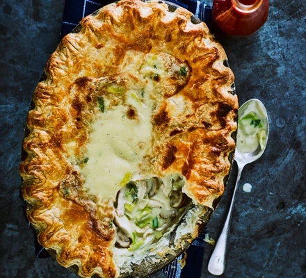

Chicken, leek & mushroom pie

Description
Warming chicken, mushroom & leek pie is sure to be a crowd-pleaser. You
are sure to enjoy the succulent chicken and crisp puff pastry.
Ingredients
- 4 large chicken breasts
- 4 skinless boneless chicken thighs
- 2 bay leaves
- ½ small pack thyme
- ½ small pack flat-leaf parsley, leaves and stalks separated
- 2 large onions, chopped
- 1 garlic clove
- 1 chicken stock cube, crumbled
- 750ml milk, plus extra to glaze
- 100g butter
- 3 leeks, chopped
- 300g button mushrooms, halved
- 100g plain flour, plus extra for dusting
- 200ml crème fraîche
- 500g puff pastry
Method
-
Put the chicken in a large pan with the bay, half the thyme sprigs, the
parsley stalks, onions, garlic, stock and seasoning. Pour the milk over
the chicken and, if you need to, top up with water to make sure the
chicken is covered. Bring the chicken to the boil, then turn down and
simmer for 15 mins. Lift from the liquid and leave to cool.
-
Drain the poaching liquid through a sieve into a large jug – you need
650ml to make the sauce for your pie.
-
Meanwhile, heat the butter in a saucepan over a low-medium heat. Add the
leeks and the mushrooms, and cook for 5-10 mins until soft, then season
well. Add the flour and stir to coat the vegetables. Slowly add the
poaching liquid, stirring until you have a thick sauce.
-
Using two forks, pull the chicken apart into thumb-sized chunks rather
than chopping it – I feel you get a far better pie this way. Chop the
parsley leaves, then stir into the leeks with the thyme leaves, crème
frâiche and chicken. Check the seasoning, then spoon the mixture into
your pie dish (or dishes) to cool slightly.
-
Heat oven to 220C/200C fan/gas 7. Roll out the pastry on a lightly
dusted work surface to the thickness of a £1 coin. Cut thin strips from
the edges and use a little water to stick these around the lip of the
pie dish, then wet the top of the pastry strip. Lift the pastry on top
of the pie, trim the edges and crimp them with your fingers or a fork.
Brush the top with milk and cut a steam hole in the middle.
-
Put the dish on a baking sheet and cook in the oven for 20-25 mins until
the pastry is risen and golden. Some of the filling will have bubbled up
through the steam hole.